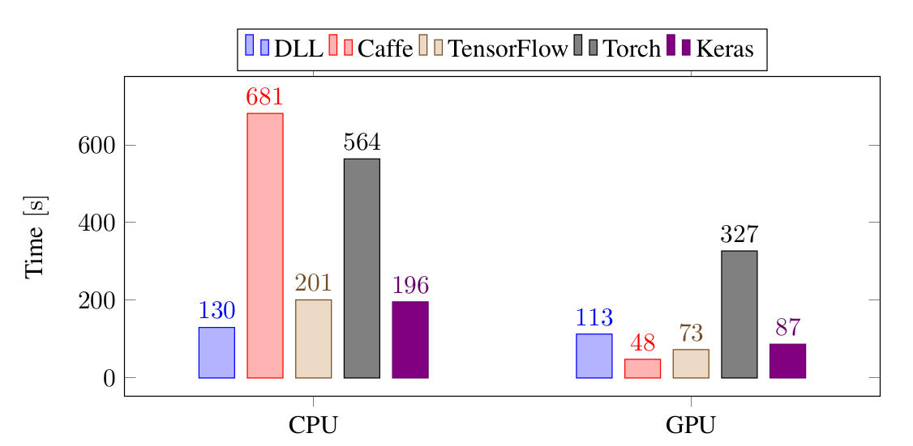
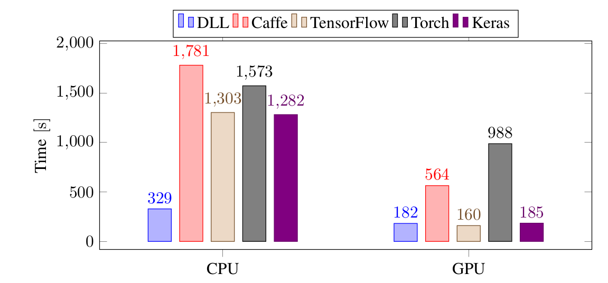
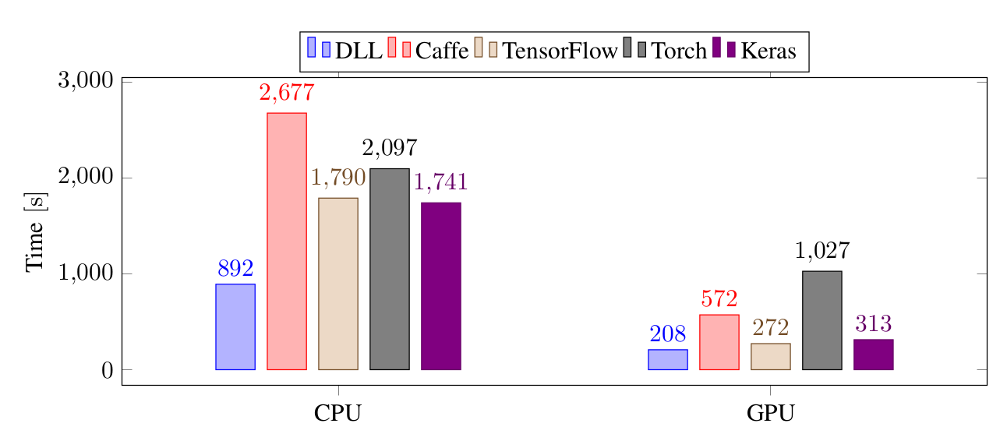
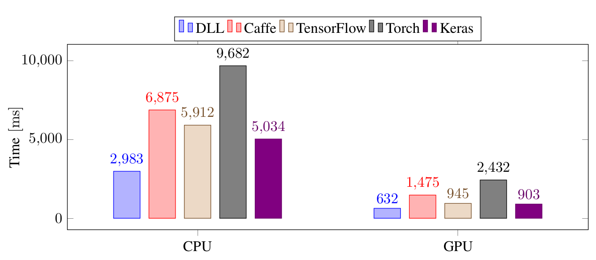

Deep Learning Library 1.0 - Fast Neural Network Library
I'm very happy to announce the release of the first version of Deep Learning Library (DLL) 1.0. DLL is a neural network library with a focus on speed and ease of use.
I started working on this library about 4 years ago for my Ph.D. thesis. I needed a good library to train and use Restricted Boltzmann Machines (RBMs) and at this time there was no good support for it. Therefore, I decided to write my own. It now has very complete support for the RBM and the Convolutional RBM (CRBM) models. Stacks of RBMs (or Deep Belief Networks (DBNs)) can be pretrained using Contrastive Divergence and then either fine-tuned with mini-batch gradient descent or Conjugate Gradient or used as a feature extractor. Over the years, the library has been extended to handle Artificial Neural Networks (ANNs) and Convolutional Neural Networks (CNNs). The network is also able to train regular auto-encoders. Several advanced layers such as Dropout or Batch Normalization are also available as well as adaptive learning rates techniques such as Adadelta and Adam. The library also has integrated support for a few datasets: MNIST, CIFAR-10 and ImageNet.
This library can be used using a C++ interface. The library is fully header-only. It requires a C++14 compiler, which means a minimum of clang 3.9 or GCC 6.3.
In this post, I'm going to present a few examples on using the library and give some information about the performance of the library and the roadmap for the project.
Examples
Let's see an example of using the library:
#include "dll/neural/dense_layer.hpp" #include "dll/network.hpp" #include "dll/datasets.hpp" int main(int /*argc*/, char* /*argv*/ []) { // Load the dataset auto dataset = dll::make_mnist_dataset(dll::batch_size<100>{}, dll::normalize_pre{}); // Build the network using network_t = dll::dyn_network_desc< dll::network_layers< dll::dense_layer<28 * 28, 500>, dll::dense_layer<500, 250>, dll::dense_layer<250, 10, dll::softmax> > , dll::updater<dll::updater_type::NADAM> // Nesterov Adam (NADAM) , dll::batch_size<100> // The mini-batch size , dll::shuffle // Shuffle before each epoch >::network_t; auto net = std::make_unique<network_t>(); // Train the network for performance sake net->fine_tune(dataset.train(), 50); // Test the network on test set net->evaluate(dataset.test()); return 0; }
This will train and test a simple three-layer fully-connected neural network on the MNIST dataset.
First, for the includes, you need to include the layers you are using, here only the dense layer. Then, you need to include network.hpp which is the basic include for every network. And the last header is the one for the datasets support.
In the main function, first we load the full MNIST dataset and pass it two options (the function takes a variadic list of options). Here, we set the batch size and indicates that each sample should be normalized to have a zero mean and a unit variance.
After this, comes the important part, the declaration of the network. In DLL, a network is a type. There are two parts to this type, the layers (inside a dll::network_layers) and the options (a variadic list of options), just after the layers. In this case, we are declaring three layers, the first with 500 hidden units, the second with 250 hidden units and the last one with 10. Each layer can also take a variadic list of options. The third layer is using the softmax activation function rather than the default sigmoid function. The network itself has three options. We are using the Nesterov Adam (NAdam) updater, a batch size of 100 (must be the same as the dataset batch size) and the dataset is shuffled before each epoch.
After this, we simply create the network using std::make_unique, then train it for 50 epochs on the training set and finally test it on the test set.
If you compile and run this program, you should see something like this:
Network with 3 layers
Dense(dyn): 784 -> SIGMOID -> 500
Dense(dyn): 500 -> SIGMOID -> 250
Dense(dyn): 250 -> SOFTMAX -> 10
Total parameters: 519500
Dataset
Training: In-Memory Data Generator
Size: 60000
Batches: 600
Augmented Size: 60000
Testing: In-Memory Data Generator
Size: 10000
Batches: 100
Augmented Size: 10000
Train the network with "Stochastic Gradient Descent"
Updater: NADAM
Loss: CATEGORICAL_CROSS_ENTROPY
Early Stop: Goal(error)
With parameters:
epochs=50
batch_size=100
learning_rate=0.002
beta1=0.9
beta2=0.999
Epoch 0/50 - Classification error: 0.03248 Loss: 0.11162 Time 3187ms
Epoch 1/50 - Classification error: 0.02737 Loss: 0.08670 Time 3063ms
Epoch 2/50 - Classification error: 0.01517 Loss: 0.04954 Time 3540ms
Epoch 3/50 - Classification error: 0.01022 Loss: 0.03284 Time 2954ms
Epoch 4/50 - Classification error: 0.00625 Loss: 0.02122 Time 2936ms
Epoch 5/50 - Classification error: 0.00797 Loss: 0.02463 Time 2729ms
Epoch 6/50 - Classification error: 0.00668 Loss: 0.02066 Time 2921ms
Epoch 7/50 - Classification error: 0.00953 Loss: 0.02710 Time 2894ms
Epoch 8/50 - Classification error: 0.00565 Loss: 0.01666 Time 2703ms
Epoch 9/50 - Classification error: 0.00562 Loss: 0.01644 Time 2759ms
Epoch 10/50 - Classification error: 0.00595 Loss: 0.01789 Time 2572ms
Epoch 11/50 - Classification error: 0.00555 Loss: 0.01734 Time 2586ms
Epoch 12/50 - Classification error: 0.00505 Loss: 0.01446 Time 2575ms
Epoch 13/50 - Classification error: 0.00600 Loss: 0.01727 Time 2644ms
Epoch 14/50 - Classification error: 0.00327 Loss: 0.00898 Time 2636ms
Epoch 15/50 - Classification error: 0.00392 Loss: 0.01180 Time 2660ms
Epoch 16/50 - Classification error: 0.00403 Loss: 0.01231 Time 2587ms
Epoch 17/50 - Classification error: 0.00445 Loss: 0.01307 Time 2566ms
Epoch 18/50 - Classification error: 0.00297 Loss: 0.00831 Time 2857ms
Epoch 19/50 - Classification error: 0.00335 Loss: 0.01001 Time 2931ms
Epoch 20/50 - Classification error: 0.00378 Loss: 0.01081 Time 2772ms
Epoch 21/50 - Classification error: 0.00332 Loss: 0.00950 Time 2964ms
Epoch 22/50 - Classification error: 0.00400 Loss: 0.01210 Time 2773ms
Epoch 23/50 - Classification error: 0.00393 Loss: 0.01081 Time 2721ms
Epoch 24/50 - Classification error: 0.00415 Loss: 0.01218 Time 2595ms
Epoch 25/50 - Classification error: 0.00347 Loss: 0.00947 Time 2604ms
Epoch 26/50 - Classification error: 0.00535 Loss: 0.01544 Time 3005ms
Epoch 27/50 - Classification error: 0.00272 Loss: 0.00828 Time 2716ms
Epoch 28/50 - Classification error: 0.00422 Loss: 0.01211 Time 2614ms
Epoch 29/50 - Classification error: 0.00417 Loss: 0.01148 Time 2701ms
Epoch 30/50 - Classification error: 0.00498 Loss: 0.01439 Time 2561ms
Epoch 31/50 - Classification error: 0.00385 Loss: 0.01085 Time 2704ms
Epoch 32/50 - Classification error: 0.00305 Loss: 0.00879 Time 2618ms
Epoch 33/50 - Classification error: 0.00343 Loss: 0.00889 Time 2843ms
Epoch 34/50 - Classification error: 0.00292 Loss: 0.00833 Time 2887ms
Epoch 35/50 - Classification error: 0.00327 Loss: 0.00895 Time 2644ms
Epoch 36/50 - Classification error: 0.00203 Loss: 0.00623 Time 2658ms
Epoch 37/50 - Classification error: 0.00233 Loss: 0.00676 Time 2685ms
Epoch 38/50 - Classification error: 0.00298 Loss: 0.00818 Time 2948ms
Epoch 39/50 - Classification error: 0.00410 Loss: 0.01195 Time 2778ms
Epoch 40/50 - Classification error: 0.00173 Loss: 0.00495 Time 2843ms
Epoch 41/50 - Classification error: 0.00232 Loss: 0.00709 Time 2743ms
Epoch 42/50 - Classification error: 0.00292 Loss: 0.00861 Time 2873ms
Epoch 43/50 - Classification error: 0.00483 Loss: 0.01365 Time 2887ms
Epoch 44/50 - Classification error: 0.00240 Loss: 0.00694 Time 2918ms
Epoch 45/50 - Classification error: 0.00247 Loss: 0.00734 Time 2885ms
Epoch 46/50 - Classification error: 0.00278 Loss: 0.00725 Time 2785ms
Epoch 47/50 - Classification error: 0.00262 Loss: 0.00687 Time 2842ms
Epoch 48/50 - Classification error: 0.00352 Loss: 0.01002 Time 2665ms
Epoch 49/50 - Classification error: 0.00232 Loss: 0.00668 Time 2747ms
Restore the best (error) weights from epoch 40
Training took 142s
error: 0.02040
loss: 0.08889
First the display of the network and the dataset, as set in the code, then the training of the network with the information, epoch by epoch. And finally, the results of the evaluation. In about 2 minutes and a half, we trained a neural network that is able to classify MNIST digits with an error rate of 2.04%, which is not bad, but can still be improved.
A few information on how to compile. You can install directly the dll library on your computer with sudo make install_headers in a checked-out dll folder. Then, you can simply compile your file with:
clang++ -std=c++14 file.cpp
or, if you cloned dll in a local dll directory, you need to specify the include folders:
clang++ -std=c++14 -Idll/include -Idll/etl/lib/include -dll/Ietl/include/ -Idll/mnist/include/ -Idll/cifar-10/include/ file.cpp
There are a few compilation options that you can ease in order to improve the performances:
-DETL_PARALLEL will allow parallel computation
-DETL_VECTORIZE_FULL will enable full vectorization of the algorithms
-DETL_BLAS_MODE will let the library know about a BLAS library (MKL for instance). You must then add include options and linking options for the BLAS ligrary of your choice
-DETL_CUBLAS_MODE will let the library know that NVIDIA cublas is available on this machine. You must then add the appropriate options (include directory and link library)
-DETL_CUDNN_MODE will let the library know that NVIDIA cudnn is available on this machine. You must then add the appropriate options (include directory and link library)
-DETL_EGBLAS_MODE will let the library know that you installed etl-gpu-blas on this machine. You must then add the appropriate options (include directory and link library)
If you want the best CPU performance, you should use the first three options. If you want the best GPU performance, you just enable the three last one. Ideally, you should enable all the options and therefore you'll have the best available performance since some algorithms are not yet totally computed on GPU.
Let's do the same experiment again but with a Convolutional Neural Network with two convolutional layers and two pooling layers:
#include "dll/neural/conv_layer.hpp" #include "dll/neural/dense_layer.hpp" #include "dll/pooling/mp_layer.hpp" #include "dll/network.hpp" #include "dll/datasets.hpp" #include "mnist/mnist_reader.hpp" #include "mnist/mnist_utils.hpp" int main(int /*argc*/, char* /*argv*/ []) { // Load the dataset auto dataset = dll::make_mnist_dataset(dll::batch_size<100>{}, dll::scale_pre<255>{}); // Build the network using network_t = dll::dyn_network_desc< dll::network_layers< dll::conv_layer<1, 28, 28, 8, 5, 5>, dll::mp_2d_layer<8, 24, 24, 2, 2>, dll::conv_layer<8, 12, 12, 8, 5, 5>, dll::mp_2d_layer<8, 8, 8, 2, 2>, dll::dense_layer<8 * 4 * 4, 150>, dll::dense_layer<150, 10, dll::softmax> > , dll::updater<dll::updater_type::NADAM> // Momentum , dll::batch_size<100> // The mini-batch size , dll::shuffle // Shuffle the dataset before each epoch >::network_t; auto net = std::make_unique<network_t>(); // Display the network and dataset net->display(); dataset.display(); // Train the network net->fine_tune(dataset.train(), 25); // Test the network on test set net->evaluate(dataset.test()); return 0; }
There is not a lot of things that change comparing to the previous example. The networks is now starting with a convolutional layer, followed by a pooling layer and then again a convolutional layer and a pooling layer and then finally two fully-connected layers. Another difference is that we are scaling the inputs by 255 instead of normalizing them. Finally, we only train the network for 25 epochs.
Once compiled and run, the output should be something like this.
Network with 6 layers Conv(dyn): 1x28x28 -> (8x5x5) -> SIGMOID -> 8x24x24 MP(2d): 8x24x24 -> (2x2) -> 8x12x12 Conv(dyn): 8x12x12 -> (8x5x5) -> SIGMOID -> 8x8x8 MP(2d): 8x8x8 -> (2x2) -> 8x4x4 Dense(dyn): 128 -> SIGMOID -> 150 Dense(dyn): 150 -> SOFTMAX -> 10 Total parameters: 21100 Dataset Training: In-Memory Data Generator Size: 60000 Batches: 600 Augmented Size: 60000 Testing: In-Memory Data Generator Size: 10000 Batches: 100 Augmented Size: 10000 Train the network with "Stochastic Gradient Descent" Updater: NADAM Loss: CATEGORICAL_CROSS_ENTROPY Early Stop: Goal(error) With parameters: epochs=25 batch_size=100 learning_rate=0.002 beta1=0.9 beta2=0.999 Epoch 0/25 - Classification error: 0.09392 Loss: 0.31740 Time 7298ms Epoch 1/25 - Classification error: 0.07005 Loss: 0.23473 Time 7298ms Epoch 2/25 - Classification error: 0.06915 Loss: 0.22532 Time 7364ms Epoch 3/25 - Classification error: 0.04750 Loss: 0.15286 Time 7787ms Epoch 4/25 - Classification error: 0.04082 Loss: 0.13191 Time 7377ms Epoch 5/25 - Classification error: 0.03258 Loss: 0.10283 Time 7334ms Epoch 6/25 - Classification error: 0.03032 Loss: 0.09791 Time 7304ms Epoch 7/25 - Classification error: 0.02727 Loss: 0.08453 Time 7345ms Epoch 8/25 - Classification error: 0.02410 Loss: 0.07641 Time 7443ms Epoch 9/25 - Classification error: 0.02448 Loss: 0.07612 Time 7747ms Epoch 10/25 - Classification error: 0.02023 Loss: 0.06370 Time 7626ms Epoch 11/25 - Classification error: 0.01920 Loss: 0.06194 Time 7364ms Epoch 12/25 - Classification error: 0.01810 Loss: 0.05851 Time 7391ms Epoch 13/25 - Classification error: 0.01575 Loss: 0.05074 Time 7316ms Epoch 14/25 - Classification error: 0.01542 Loss: 0.04826 Time 7365ms Epoch 15/25 - Classification error: 0.01392 Loss: 0.04574 Time 7634ms Epoch 16/25 - Classification error: 0.01287 Loss: 0.04061 Time 7367ms Epoch 17/25 - Classification error: 0.01167 Loss: 0.03779 Time 7381ms Epoch 18/25 - Classification error: 0.01202 Loss: 0.03715 Time 7495ms Epoch 19/25 - Classification error: 0.00967 Loss: 0.03268 Time 7359ms Epoch 20/25 - Classification error: 0.00955 Loss: 0.03012 Time 7344ms Epoch 21/25 - Classification error: 0.00853 Loss: 0.02809 Time 7314ms Epoch 22/25 - Classification error: 0.00832 Loss: 0.02834 Time 7329ms Epoch 23/25 - Classification error: 0.00807 Loss: 0.02603 Time 7336ms Epoch 24/25 - Classification error: 0.00682 Loss: 0.02327 Time 7335ms Training took 186s error: 0.01520 loss: 0.05183
This network is doing a bit better than the previous one, achieving a 1.52% error rate in about 3 minutes.
If you are interested, you can find a few more examples on the Github repository.
Performance
If you have been following my blog lately, you already may have seen part of this information, but I wanted to emphasize it here. I've been doing a lot of work on the performance of the library. To see how i was faring against other popular frameworks, I decided to compare the performances of DLL against TensorFlow, Keras, Torch and Caffe. I also tried DeepLearning4J, but I had so many issues with it and its performance were quite disastrous so I dropped it. If someone is interested in the dropped results, I can put them somewhere. All the frameworks were installed with default options and all the frameworks that can use the MKL have been set to use it.
The first experiment I did was the training of a small three-layers on the MNIST data set:
On CPU, DLL is the fastest framework to train this network. It's about 35% faster than TensorFlow and Keras, 4 times faster than Torch and 5 times faster than Caffe. On GPU, Caffe is the fastest framework, followed by Keras and TensorFlow and DLL. In that case, Torch is the slowest framework.
Let's see how the frameworks are faring with a small CNN on the same task:
Again, on CPU, DLL is the fastest framework, by a very significant margin, it's four times faster than TensorFlow and Keras and five times faster than Torch and Caffe. On GPU, it's on par with Keras and TensorFlow and 3 times faster than Caffe. It's even more than 5 times faster than Torch.
The next test is done with a larger CNN on CIFAR-10:
On this larger CNN, the differences are less impressive than before, nevertheless, DLL is still the fastest framework on CPU. It's still around twice faster than TensorFlow, Keras and Torch and around 3 times faster than Caffe. On GPU, DLL is slightly faster than Keras and TensorFlow. It's 2.7 times faster than Caffe and 5 times faster than Torch.
The last test is done on Imagenet with a twelve layers CNN. This time, the performance is shown in the necessary time to train a mini-batch of 128 images.
Again, DLL is faster than all the other frameworks on both CPU and GPU. The large difference between DLL and TensorFlow and Keras is mainly due to the poor performance of reading the Imagenet images from the Python code whereas the code was optimized in DLL.
Overall, in all tested experiments, DLL is always the fastest framework on CPU. On GPU, except for a very small fully-connected network, it's also always in the fastest frameworks with TensorFlow and Keras.
You can find the code of these experiments online if you are interested.
What's next ?
I do not know exactly what the next version of DLL will contain, but I know the direction in which I'm going to develop.
I would really like to be able to use DLL to classify text. In first time, I plan to add support for learning embeddings from text and be able to use CNN on top of the embeddings. Doing that, I also plan to add support to be able to merge several CNN layers together, so that I can use various filter sizes. Hopefully, this should not take too long. In a second time, I really want to integrate support for Recurrent Neural Networks (RNNs) into the framework. In a first time, only simple CNN cell, but then I want to add support for LSTM and GRU cells. This will definitely take some time, but I really want to do it completely in order to fully understand what's going on inside such networks.
Another thing on which I would like to focus is the documentation of the library. The code documentation is okay, but I would need to put online a list of the possible layers as well as the list of the possible options. I'll probably try to use Doxygen for this. I also want to make a few more examples of the usage of the library, especially when I have embeddings and RNN support.
Although performance is already quite good in general, there are a few things to improve still. Some operations are really not efficient on GPU for now, for instance Batch Normalization and Dropout. I want to make sure that all operations can be efficiently computed on GPU. There are also a few things that are not efficient on CPU. For instance Batch Normalization is currently very poor. I'll have to do something on that matter. Some of the SGD optimizers such as Nadam are also quite slow. Ideally, the performance of DLL should also be better when performance libraries are not used.
On a final note, I would also like to improve the compilation time again. Even though the recent changes made it a lot faster to compile DLL programs, it is still not as fast as I would like.
Download DLL
You can download DLL on Github. If you only interested in the 1.0 version, you can look at the Releases pages or clone the tag 1.0. There are several branches:
master Is the eternal development branch, may not always be stable
stable Is a branch always pointing to the last tag, no development here
For the future release, there always will tags pointing to the corresponding commits. You can also have access to previous releases on Github or via the release tags.
For documentation, the best documentation so far is the examples that are are available. You can also take a look at the source of the tests where every functions of the library is used. Once there is interest for the library, I will focus on the documentation.
Don't hesitate to comment this post if you have any comment on this library or any question. You can also open an Issue on Github if you have a problem using this library or propose a Pull Request if you have any contribution you'd like to make to the library.
Hope this may be useful to some of you :)
Comments
Comments powered by Disqus